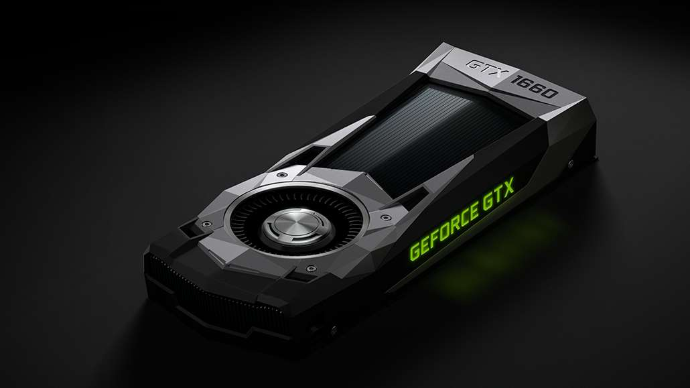

RTX 4080 S - Den ultimata spelupplevelsen
RTX 4080 S är ett kraftfullt grafikkort som erbjuder exceptionell prestanda för de senaste spelen.
I detta inlägg går vi igenom vad som gör detta kort så speciellt.
Specifikationer
- GPU-arkitektur: Ada Lovelace
- VRAM: 16 GB GDDR6X
- CUDA-kärnor: 9728
Prestanda i spel
RTX 4080 S ger exceptionell prestanda vid 4K-upplösning och med Ray Tracing aktiverat. Det
levererar en flytande spelupplevelse även vid högsta inställningar.
RTX 3070 Ti - Priser och prestanda
RTX 3070 Ti erbjuder hög prestanda till ett mer överkomligt pris jämfört med RTX 4080. Vi kollar på
vad detta grafikkort har att erbjuda.
Specifikationer
- GPU-arkitektur: Ampere
- VRAM: 8 GB GDDR6
- CUDA-kärnor: 5888
Prestanda i spel
RTX 3070 Ti levererar solid prestanda vid 1440p och 4K, men inte lika bra som RTX 4080. Det är dock
ett bra val för den som vill ha bra prestanda utan att spendera för mycket.

GTX 1660 Ti - Ett bra val för 1080p
GTX 1660 Ti är ett budgetvänligt alternativ för 1080p-spelare. Här går vi igenom varför detta
grafikkort fortfarande är relevant för spel på lägre upplösning.
Specifikationer
- GPU-arkitektur: Turing
- VRAM: 6 GB GDDR5
- CUDA-kärnor: 1536
Prestanda i spel
GTX 1660 Ti är ett bra val för spel vid 1080p med höga inställningar, men det stöder inte Ray
Tracing eller DLSS, vilket gör det mindre framtidssäkert.